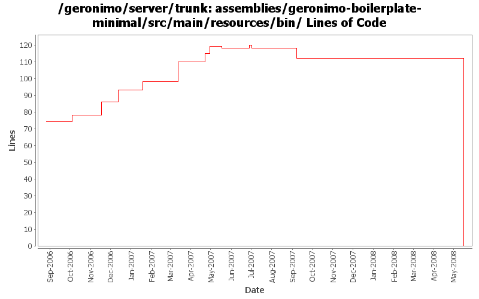

[root]/assemblies/geronimo-boilerplate-minimal/src/main/resources/bin

| Author | Changes | Lines of Code | Lines per Change |
|---|---|---|---|
| Totals | 73 (100.0%) | 207 (100.0%) | 2.8 |
| kevan | 19 (26.0%) | 83 (40.1%) | 4.3 |
| dwoods | 11 (15.1%) | 33 (15.9%) | 3.0 |
| dain | 5 (6.8%) | 28 (13.5%) | 5.6 |
| rickmcguire | 6 (8.2%) | 23 (11.1%) | 3.8 |
| jdillon | 25 (34.2%) | 17 (8.2%) | 0.6 |
| vamsic007 | 1 (1.4%) | 13 (6.3%) | 13.0 |
| akulshreshtha | 6 (8.2%) | 10 (4.8%) | 1.6 |
Drop -minimal suffix on the boilerplate, since we only have one of these now, the suffix is meaningless
0 lines of code changed in 10 files:
GERONIMO-3446 Merge fix from branches/2.0. Simple fix to avoid problems with improperly configured JRE_HOME or JAVA_HOME settings. Invalid java.ext.dirs property setting results in strange errors in java runtime. Geronimo no longer needs java.ext.dirs to be configured. So, I've removed the setting. If someone is interested in doing something more sophisticated, have at it...
3 lines of code changed in 2 files:
GERONIMO-3270 better technique for setting operation-order
2 lines of code changed in 2 files:
GERONIMO-3270 Avoid foreign key violations in CMP. Using operation-order avoids the problem
4 lines of code changed in 2 files:
GERONIMO-3203 Wrong main class for starting server in debug mode. YunFeng, thanks for the patch.
2 lines of code changed in 2 files:
GERONIMO-3172 remove obsolete JDB_OPTS reference from geronimo.bat. Ted, thanks for the patch.
0 lines of code changed in 1 file:
GERONIMO-3170 User supplied JPDA_OPTS are never used
1 lines of code changed in 1 file:
GERONIMO-3011 Few more relative java.io.tmpdir, This will resolve relative to GERONIMO_BASE.
2 lines of code changed in 2 files:
GERONIMO-3128 Error in Geronimo.bat blocks its usage for Minimal assemblies, due to no bin\jpa.jar. Moved the usage of the quotes to where its set - JAVA_AGENT_OPTS=-javaagent:%JAVA_AGENT_JAR%. Also added the missing -Djava.ext.dirs to the :doJDB server startup section.
3 lines of code changed in 1 file:
GERONIMO-3114 Update setup of java.endorsed.dirs to always have ours before the JVM. Also updated java.ext.dirs to place ours before the JVM.
6 lines of code changed in 2 files:
GERONIMO-3011 Resolve relative java.io.tmpdir relative to GERONIMO_BASE instead of user.dir
6 lines of code changed in 2 files:
GERONIMO-3110 Update Windows scripts to handle a couple failure scenarios.
21 lines of code changed in 4 files:
Updated Main class, the change is related to GERONIMO-2978
2 lines of code changed in 2 files:
Maybe fix windows launch script?
1 lines of code changed in 1 file:
(GERONIMO-2951) Include -javaagent:bin/jpa.jar if the jpa.jar exists
16 lines of code changed in 2 files:
GERONIMO-2745 NPE at org.apache.geronimo.security.SubjectId.hashCode(SubjectId.java:79)
o The problem is due to the shell script geronimo.sh using colon as a path separator instead of semi-colon in ext and endorsed dirs when run under CYGWIN.
o Resolved by making the script use semi-colon as path separator when run under CYGWIN
13 lines of code changed in 1 file:
Applied GERONIMO-2555 Windows scripts don't work when used from different drive
Thanks for the patch Mark DeLaFranier
23 lines of code changed in 4 files:
GERONIMO-2537 Update more src file headers
73 lines of code changed in 12 files:
GERONIMO-2532 Fix bug in setjavaenv.sh so that JRE_HOME will be set properly based on JAVA_HOME.
1 lines of code changed in 1 file:
OSX doesn't have a jre dir so set it to JAVA_HOME
5 lines of code changed in 1 file:
GERONIMO-2440 Geronimo java.endorsed.dirs support is non-functional
23 lines of code changed in 6 files:
Apply props
0 lines of code changed in 12 files: